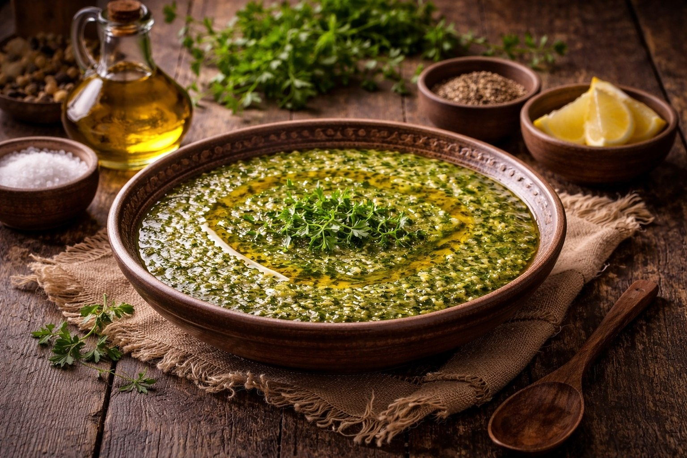
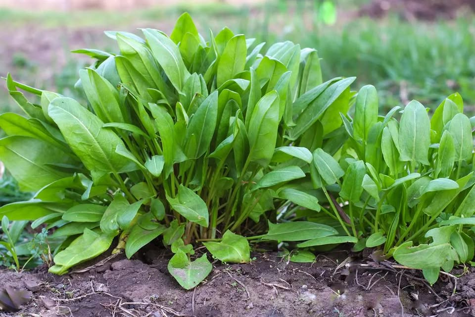
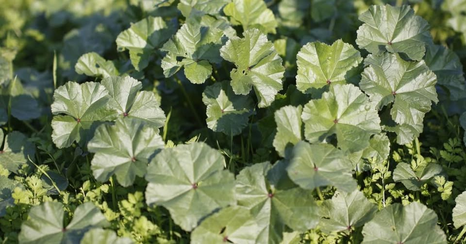
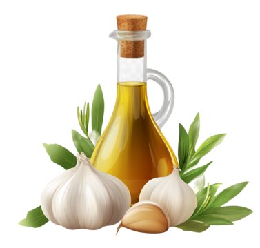

Une exploration complète des ressources végétales spontanées de la région de Jijel

Découvrez comment la biodiversité végétale algérienne se transforme en un plat traditionnel équilibré, riche en histoire et en bienfaits pour la santé.
Les plantes constituent la base de l'alimentation humaine depuis des millénaires. Elles fournissent les macronutriments essentiels (glucides, protéines, lipides) ainsi que des micronutriments indispensables (vitamines, minéraux et composés bioactifs).
La biodiversité végétale joue un rôle fondamental dans l'équilibre nutritionnel et la prévention de nombreuses maladies. Dans ce contexte, les plats traditionnels algériens reflètent une utilisation intelligente et variée des ressources végétales locales.
La wilaya de Jijel, située au nord-est de l'Algérie sur la côte méditerranéenne, se caractérise par une richesse écologique et une biodiversité végétale remarquable.
Cette région montagneuse, appartenant à la chaîne des Babors, bénéficie d'un climat méditerranéen humide, avec des précipitations abondantes et des températures modérées. Ces conditions favorisent le développement d'une flore variée et une agriculture diversifiée.
La fertilité des sols et l'humidité élevée permettent la culture de nombreuses espèces végétales, notamment :
La richesse végétale de Jijel se reflète dans sa gastronomie traditionnelle, basée principalement sur l'utilisation de produits locaux frais.
Parmi les plats typiques de la région, on retrouve le plat végétal "Harbit", qui illustre parfaitement l'intégration des ressources végétales locales dans l'alimentation quotidienne.
Le « Harbit » est un plat traditionnel végétarien originaire de la région de Jijel, caractérisé par l'utilisation de plantes sauvages comestibles locales. Il reflète un savoir-faire culinaire ancien basé sur l'exploitation des ressources végétales spontanées.

Hmida (Oseille - Rumex spp.)
Mjir (Chenopodium sp.)
Ail & Huile d'oliveCuisson des plantes (ébullition ou vapeur) :
Assaisonnement à l'huile d'olive :
La préparation de l'Arbiṭ demande de la patience et du soin pour préserver les qualités nutritionnelles des plantes.
Plante herbacée sauvage, de couleur verte, avec des feuilles tendres et une tige fine. Elle pousse naturellement sans culture.
Les feuilles 🌿 (Parfois les jeunes tiges).
Métabolites primaires : Glucides, Fibres alimentaires, Protéines, Lipides (traces)
Métabolites secondaires : Polyphénols, Flavonoïdes, Acides organiques, Composés bioactifs divers
Plante herbacée sauvage très connue. Elle possède des feuilles larges et douces, et des fleurs violettes. Elle pousse naturellement dans les champs et les jardins.
Les feuilles 🌿 (Parfois les fleurs).
Plante herbacée sauvage connue pour son goût acide. Elle possède des feuilles vertes allongées et pousse dans les zones humides.
Les feuilles 🌿.
En conclusion, le plat traditionnel Arbiṭ illustre parfaitement la richesse de la nature et de la culture culinaire de la région de Jijel. À travers l'utilisation de plantes comme el mejir, el lahlah et el hamida, nous découvrons une alimentation simple, naturelle et pleine de bienfaits.
Ce projet nous a permis de comprendre que les plantes ne sont pas seulement des ingrédients, mais de véritables sources de santé, riches en nutriments essentiels et en composés protecteurs.
Ainsi, préserver les plantes et valoriser leur utilisation dans notre alimentation est une nécessité pour un avenir sain et durable.
Cette présentation vous a permis de découvrir l'art nutritionnel du Harbit de Jijel.
Ensemble, valorisons notre patrimoine botanique pour une alimentation saine et durable.